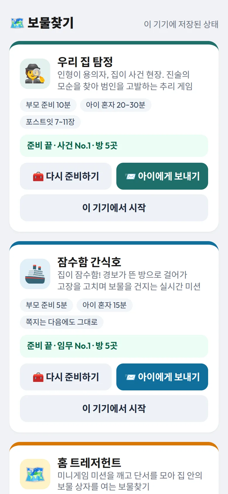
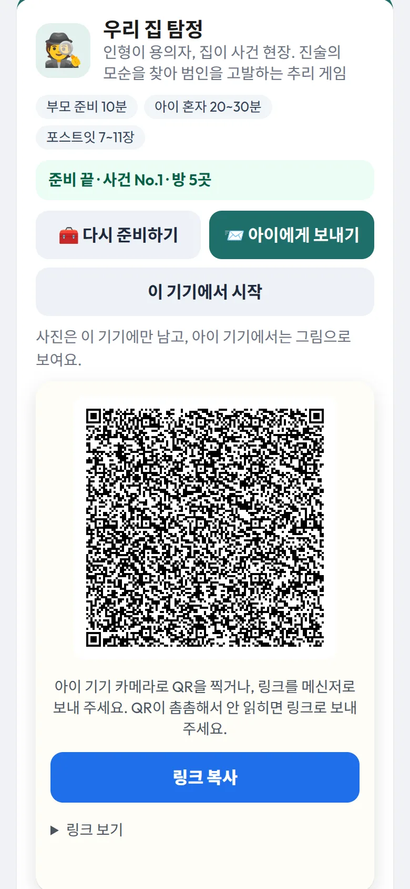

게임 설명서
집 안 전체가 놀이판이 되는 보물찾기 세 가지예요. 처음 하기 전에 한 번 읽어 보세요. 준비하는 법, 아이가 하는 순서, 끝난 뒤 볼 것을 화면과 함께 설명해요.
?어떤 게임을 할까
| 🕵️ 우리 집 탐정 | 🚢 잠수함 간식호 | 🕶️ 작전명 스낵 볼트 | |
|---|---|---|---|
| 누가 | 아이 혼자, 부모는 지켜보기 | 아이 혼자, 부모는 지켜보기 | 아이와 부모가 함께 |
| 부모 준비 | 10분쯤 | 5분쯤 | 10분쯤 |
| 놀이 시간 | 20~30분 | 15분쯤 | 12~18분쯤 |
| 준비물 | 폰 1대, 포스트잇 7~11장, 인형 4~6개 | 폰 1대, 포스트잇 4~6장 (방마다 한 장) | 폰 2대, 쪽지 한 장(고르면) |
| 이럴 때 | 차분히 생각하며 푸는 걸 좋아할 때 | 몸을 움직이며 서두르는 놀이를 원할 때 | 함께 대화하며 협력하고 싶을 때 |
💡 세 게임 모두 끝에 진짜 보물(간식, 선물)을 찾게 돼요. 무엇을 어디에 숨겼는지는 준비할 때 부모가 적어 두고, 아이가 성공하면 화면에 나타나요.
✉아이 기기로 보내기
세 게임 모두 준비는 부모 기기에서 해요. 아이가 다른 기기(태블릿, 아이 폰)로 할 때는 링크를 보내면 돼요.

1부모 대시보드 열기
게임 목록 맨 아래 👪 부모 대시보드를 누르면 보물찾기마다 이 기기에 저장된 상태가 보여요.
- 🧰 준비하기: 게임을 준비해요. 각 게임 설명서의 "부모 준비"를 따라 하면 돼요.
- 📨 아이에게 보내기: 준비가 끝나면 켜져요. 아이 기기로 보낼 링크가 나와요.
- 이 기기에서 시작: 아이가 부모 폰을 그대로 쓸 때 눌러요. 작전명 스낵 볼트는 이 자리가 본부 열기예요.

2QR을 보여 주거나 링크를 보내기
아이 기기 카메라로 QR을 찍거나, 링크 복사(폰에서는 보내기도 있어요)로 메신저에 보내요. 아이가 링크를 열면 그 기기에서 게임이 바로 시작돼요.
- 같은 링크를 다시 열면 하던 데서 이어져요.
- 진행, 기록, 관찰 리포트는 링크를 연 기기에 남아요. 끝난 뒤 리포트는 아이 기기에서 봐요.
⚠️ 링크에 준비 내용이 통째로 들어 있어서 길어요. QR이 촘촘해 안 읽히면 메신저로 보내 주세요. 카카오톡 안에서 열리면 저장도 그 안에 되니, 처음 연 곳에서 계속 열어 주세요.